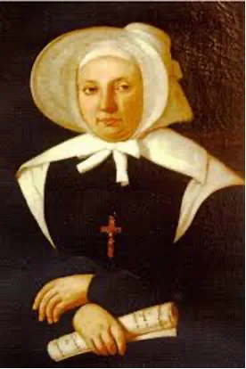

The Foundress St. Emilie
Emilie De Vialar was born in 1797 to a distinguished family in an ancient town in the south of France called Gaillac, not far from Toulouse. Her parental grandfather was a magistrate and her own father, an educated man, who held administrative positions in Gaillac. Her maternal grandfather Baron de Portal, belonged to a family of pharmacists and became physician to both Kings Louis Philippe and Charles X. Her mother was a devout woman, and educated Emilie in the faith. At the time Emilie was to attend boarding school in Paris her mother died. After two years in Paris, during which time she made her First Communion, her father called her home to take charge of the household and be his companion at social events.
Emilie’s presence at home was greatly resented by a jealous and interfering housekeeper who made her life almost intolerable, misrepresenting her to her father in many different ways. Emilie bore this constant unpleasantness with patience and resignation.
From an early age Emilie was inspired with an ardent love for God and drawn to assist the poor and suffering people of Gaillac. She was attracted to prayer, and at various times in her life was blessed with special spiritual experiences. After one such experience at the age of 19, she became engaged in works of charity in a very organized way. She aimed to help people in whatever way she could, taking food and remedies to the poor, and having them come to her home to receive help. Her father did not approve of these charitable works and she later wrote,

‘I continued to perform works of charity towards the poor and this was the occasion of many domestic troubles.’ (St. Emilie de Vialar, Account of Graces)
Another grace given to Emilie led to a decision to devote her life entirely to God. She spent considerable time in prayer in the privacy of her room and made many visits to the church, which was another cause for dissension between herself and her father. There were also many arguments when she dismissed several young men who sought her hand in marriage.
Being determined to accomplish the will of God, Emilie confided her ideas to the new curate, Fr Mercier, who encouraged and guided her. As she matured, she gradually formed the idea of founding a Congregation so that the sick and poor could have constant care and attention. In 1832 her maternal grandfather died and she received a substantial legacy. With this independence she was able to set about bringing her plans to fruition. On the evening of Christmas Day 1832, after leaving an affectionate letter for her father, and arranging for her younger brother’s wife to be attentive to his needs, she left her father’s house. With three companions she set up a fledgling community which during her life time was to spread far and wide.
Within six months the little group had increased to twenty-six. Besides providing relief for the poorer classes as well as care of the sick and aged in their homes, the Sisters also saw to the free education of children. There was much criticism and malicious gossip in the small town but the Sisters carried on regardless. It was at this time that Emilie sought and obtained the approval of her new Institute from Archbishop Mgr. de Gauly of Albi.
In 1833 Emilie’s brother Augustin who had been among the first French settlers to colonize Algeria, requested that she send some of her Sisters to staff the hospital being built. This was Emilie’s chance to put into action a long-held dream to work in mission countries. In August 1835 Emilie accompanied the three chosen Sisters to begin their missionary work. By the end of 1836 there were twenty Sisters and Emilie had purchased buildings with a view to future needs.
The Congregation of the Sisters of St Joseph of the Apparition, as Emilie wished it to be called, steadily increased in membership. At this point Mgr. de Gauly advised Emilie to go to Rome to apply for official Approbation of the Institute. However, at this time, an untenable situation was unfolding in Algiers. The newly appointed Bishop Dupuch, at first most welcoming of the Sisters, soon took on a domineering and possessive attitude trying to enforce changes to the Rule and Constitution that would limit the Congregation to service in his Diocese. He even went to such lengths as to excommunicate the Sisters, depriving them of the Sacraments. Emilie’s vision was much broader than this and before leaving for Rome she had established five Sisters in a new foundation in Tunis.
She was received by Pope Gregory XV1 in December 1840 and subsequently spent eighteen months in Rome waiting for the Cardinals to study her case, which included vilifying reports from Bishop Dupuch. Whilst in Rome, she took the opportunity to establish a house bringing three Sisters from Gaillac to nurse the sick and educate the children. Having at last received the Laudatory Decree of Approbation in May of 1842, Emilie hurried to be with her Sisters in Algiers where matters had greatly deteriorated. Under pressure from the Bishop the French Government had decreed that the Sisters must leave Algeria after eight years of service to the Colony. The departure was to take place immediately along with a great deal of legal wrangling over ownership of her properties, to the extent that ultimately, she received no remuneration for the large amounts of money she had expended in the Colony.
While she was attending to the problems in Algeria, travelling to new locations and biding her time in Rome, she had left her financial affairs in the hands of a Sister who she felt she could trust, and a businessman recommend by the Parish Priest. This trust was found to be misplaced; records were falsified, and documents and pages missing from account books which Emilie herself had so diligently kept. As a result, Emilie was embroiled in a series of unpleasant court cases. The final verdict being given against Emilie who was left penniless and in debt.
With a growing animosity in Gaillac towards her and the Congregation, Emilie found she could no longer continue her work from this town. In 1847 the Sisters left Gaillac under cover of darkness travelling through the night and arriving in Toulouse at dawn where they sought refuge. However, spiteful gossip had preceded them and their presence was merely tolerated by the inhabitants. They found themselves with no means of support and lived in dire poverty, even having to join queues at the soup kitchen.
Once again difficulties with the hierarchy surfaced as the Bishop of Toulouse wanted to make himself the Superior General of the Congregation. The priest appointed wanted to administer the finances of the Institute in his own way. By 1852 Emilie had decided that living in Toulouse was no longer an option, so she began to look further afield and finally decided on Marseilles.
After five years of privation, humiliation, disappointments and physical and moral suffering, Emilie met an understanding and friendly advocate in the person of Mgr. de Mazenod, Bishop of Marseilles, and founder of a missionary order of men, the Oblates of Mary Immaculate. Finances were still a problem for her and it was some time before the Sisters were able to count on a steady income from their work. In 1855 to she wrote to Sr Eugenie Laurez:
Had I not become poor I would not have been able to establish the Congregation.
Emilie was fifty-five and now at last was able to experience some peace and stability in her life. Through her prayer and spiritual life, she had developed a relationship with God who favored her with intimate graces and support. She had learnt to depend totally on the providence of God and such was her faith and confidence that she was able to function, secure in the knowledge that she was following God’s will. She pursued her task with untiring zeal, courage and perseverance.
From the time of the inception of the Congregation until 1844 Emilie, had made fourteen foundations. These foundations were flourishing and requests for Sisters to go to new missionary situations were numerous.
Her comparative peaceful existence in Marseilles was not to last for long. In mid-August of 1856 Emilie became ill. At first her illnesses were thought to be cholera, but after her death it was discovered, she had a strangulated hernia which she had sustained many years before. She gradually worsened and within five days, on 24 August, she died peacefully surrounded by her Sisters and her nieces. The funeral service was conducted with the greatest simplicity, and sorrow was tinged with joy as the life of this valiant woman had been a gift from God to the Sisters and to the Church.
At her death she was almost fifty-nine, and during the brief period of twenty-four years that her Congregation had been in existence, she had supplied missionaries to countries as varied as Algeria. Tunisa, France, Italy, Cyprus, Malta, Syria, Greece, Burma, Palestine, Turkey, Crete and Australia, having made forty-two foundations in all.
Emilie de Vialar was canonized on 24 June 1951 by Pope Pius X11. Her Feast Day is celebrated on 17 June.